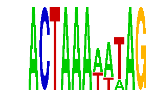

family_15 |
|---|
|  |
| Download PWM |
| Download instances (motifs) |
| Show motif distribution |
Query_ID | Query_Consensus | Subject_Name | Source_DB | Subject_ID | Length | Orientation | Offset | Divergence | Overlap | Subject_Consensus |
|---|---|---|---|---|---|---|---|---|---|---|
| family_15 | ACTAAAAATAG | TAAWWATAG | JASPAR | PF0054 | 9 | as given | 2 | 0.752 | 9 | TAAAAATAG |
Sequence | Start_position (from start) | Start_position (from end) | Average conservation | Best conservation score | Instance_with_best_CS | Best_Z-score | Instance_with_best_ZS | Strand |
|---|---|---|---|---|---|---|---|---|
| chr8:64311000-64313700 | 2666 | 2677 | 0.462909 | 0.52 | ACTAAAWAWAG | 13.999783 | ACTAAAWWTAG | -1 |
| chr13:98922400-98924100 | 700 | 711 | 0.01 | 0.015 | ACKAAAWATAG | 13.999783 | ACTAAAWWTAG | -1 |
| chr12:104600200-104602100 | 612 | 623 | 0.056 | 0.1 | ACTAAAWATAG | 15.44824 | ACTAAAWAWAG | -1 |
| chr14:55583700-55589300 | 1865 | 1876 | 0.999273 | 1 | ACTAAAWAWAG | 15.44824 | ACTAAAWAWAG | -1 |
| chr9:90996327-90997327 | 746 | 757 | 0.994818 | 1 | ACTAAAWWTAG | 13.999783 | ACTAAAWWTAG | 1 |
| chr3:137716784-137719300 | 2492 | 2503 | 0.0216364 | 0.044 | ACTAAAWWTAG | 13.999783 | ACTAAAWWTAG | -1 |
| chr12:118720300-118721700 | 1023 | 1034 | 0.0199091 | 0.034 | ACTAAAWATAG | 15.44824 | ACTAAAWAWAG | 1 |
| chr5:151867766-151869100 | 311 | 322 | 0.00163636 | 0.006 | ACTAAAWATAG | 14.866536 | ACKAAAWATAG | 1 |
| chr2:76766600-76768000 | 786 | 797 | 0.00545455 | 0.011 | ACTAAAWAWAG | 15.282343 | ACTAAATAWAG | 1 |
| chr5:123813300-123815478 | 1418 | 1429 | 0.999364 | 1 | ACTAAAWWTAG | 13.999783 | ACTAAAWWTAG | 1 |
| chr2:84304500-84305800 | 958 | 969 | 0.000909091 | 0.003 | ACTAAAWAWAG | 15.44824 | ACTAAAWAWAG | -1 |
| chr3:119497469-119498469 | 616 | 627 | 0.888727 | 0.91 | ACKAAAWATAG | 14.866536 | ACTAAAWATAG | -1 |
| chr1:136846008-136849000 | 1436 | 1447 | 0.0206364 | 0.037 | ACTAAATAWAG | 15.44824 | ACTAAAWAWAG | 1 |
| chr3:69242710-69243800 | 442 | 453 | 0.965273 | 1 | ACTAAAWAWAG | 15.282343 | ACTAAATAWAG | 1 |
| chr2:64931905-64933640 | 38 | 49 | 0.000363636 | 0.003 | ACTAAAWWTAG | 13.999783 | ACTAAAWWTAG | 1 |
| chr13:9453470-9454470 | 147 | 158 | 0.0150909 | 0.035 | ACTAAAWWTAG | 13.999783 | ACTAAAWWTAG | 1 |
| chr16:94838800-94840506 | 153 | 164 | 0.213545 | 0.251 | ACTAAAWWTAG | 13.999783 | ACTAAAWWTAG | 1 |
| chr5:148661430-148663100 | 667 | 678 | 0.999545 | 1 | ACKAAATAWAG | 13.999783 | ACTAAAWWTAG | 1 |
| chr4:54676900-54678310 | 691 | 702 | 1 | 1 | ACTAAAWWTAG | 13.999783 | ACTAAAWWTAG | 1 |
| chr2:31894000-31895223 | 21 | 32 | 0.0183636 | 0.023 | ACTAAAWWTAG | 13.999783 | ACTAAAWWTAG | -1 |
| chr13:29303752-29305200 | 85 | 96 | 0.217364 | 0.295 | ACKAAATAWAG | 15.282343 | ACTAAATAWAG | 1 |
| chr11:21460935-21462500 | 784 | 795 | 0.00172727 | 0.005 | ACKAAATAWAG | 13.999783 | ACTAAAWWTAG | 1 |
| chr16:52008056-52009056 | 966 | 977 | 0.001 | 0.003 | ACTAAAWAWAG | 14.866536 | ACTAAAWATAG | 1 |
| chr8:36063887-36065498 | 667 | 678 | 0.998727 | 1 | ACTAAAWATAG | 14.866536 | ACKAAAWATAG | 1 |
| chr16:53130821-53132000 | 742 | 753 | 0.00181818 | 0.009 | ACTAAAWATAG | 14.866536 | ACKAAAWATAG | -1 |
| chr9:24767135-24768900 | 861 | 872 | 0.859909 | 0.88 | ACTAAAWATAG | 14.866536 | ACKAAAWATAG | 1 |
| chr4:10005500-10006610 | 1059 | 1070 | 0.989182 | 1 | ACTAAAWWTAG | 15.44824 | ACTAAAWAWAG | -1 |
| chr2:115699092-115700600 | 852 | 863 | 0.00490909 | 0.016 | ACTAAAWAWAG | 14.866536 | ACTAAAWATAG | 1 |
| chr17:32519900-32522300 | 678 | 689 | 0.986455 | 1 | ACKAAAWATAG | 13.999783 | ACTAAAWWTAG | -1 |
| chr12:41885500-41887459 | 1033 | 1044 | 0.0646364 | 0.148 | ACKAAAWATAG | 13.999783 | ACTAAAWWTAG | 1 |
| chr4:147335900-147338900 | 1994 | 2005 | 0.999909 | 1 | ACTAAAWWTAG | 13.999783 | ACTAAAWWTAG | 1 |
| chr9:85582106-85583106 | 775 | 786 | 0.00127273 | 0.005 | ACTAAAWATAG | 14.866536 | ACKAAAWATAG | 1 |
| chr6:119130600-119133300 | 1388 | 1399 | 0.130455 | 0.27 | ACKAAAWATAG | 14.866536 | ACTAAAWATAG | 1 |
| chr1:189697200-189698500 | 115 | 126 | 0.901909 | 0.945 | ACTAAAWATAG | 14.866536 | ACKAAAWATAG | 1 |
| chr2:113948378-113949500 | 409 | 420 | 0.00745455 | 0.015 | ACTAAATAWAG | 15.282343 | ACKAAATAWAG | 1 |
| chr9:114932900-114934400 | 422 | 433 | 0.0283636 | 0.056 | ACTAAAWWTAG | 15.44824 | ACTAAAWAWAG | -1 |
| chr2:59202000-59204100 | 585 | 596 | 0.000363636 | 0.002 | ACTAAAWAWAG | 14.866536 | ACTAAAWATAG | 1 |
| chr2:35038114-35039114 | 847 | 858 | 0.662727 | 0.92 | ACTAAAWWTAG | 13.999783 | ACTAAAWWTAG | 1 |
| chr9:64963761-64964761 | 918 | 929 | 0.0452727 | 0.073 | ACTAAAWAWAG | 15.44824 | ACTAAAWAWAG | 1 |
| chr8:117358136-117359600 | 573 | 584 | 0.411364 | 0.521 | ACTAAAWWTAG | 15.282343 | ACKAAATAWAG | 1 |
| chr6:32999200-33000596 | 377 | 388 | 0.204818 | 0.404 | ACTAAATAWAG | 15.44824 | ACTAAAWAWAG | -1 |
| chrX:165216000-165217622 | 842 | 853 | 0.161636 | 0.594 | ACTAAAWWTAG | 13.999783 | ACTAAAWWTAG | 1 |
| chr19:53300900-53303700 | 2045 | 2056 | 0.539364 | 0.61 | ACTAAATAWAG | 15.44824 | ACTAAAWAWAG | 1 |